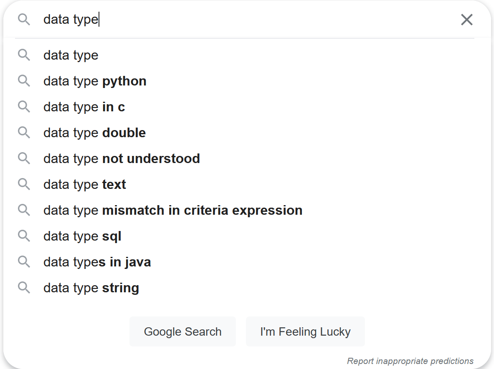

elisp 中的哈希表与多值返回
Table of Contents
本文是对 elisp manual 上 Hash Tables 一章的学习总结。除了介绍哈希表相关函数的使用，本文也会简单介绍哈希表的原理知识。考虑到 elisp 和 common lisp 中哈希函数存在一定的差异，本文也会介绍一下 CL 中的多值返回和 cl-lib 中的对应实现。
本文顺带介绍一下数据结构和数据类型的关系。这个问题困扰了我很久，但一直也没有弄清楚的动力。本文的第一章尝试给出一种理解，如果对 emacs 不感兴趣可以看看第一部分是否有用。
文中代码使用的环境为：
- emacs 27.1 on windows
- SBCL 2.0.0 on windows
- gcc (x86_64-posix-seh-rev0, Built by MinGW-W64 project) 8.1.0
- Python 3.8.4 on Windows
1 数据结构和数据类型
哈希表，它是一种数据类型呢，还是一种数据结构呢？不知你想过这个问题没有。在 Python 中我们有叫做 dict 的 数据类型 ，但哈希表（或者叫做散列表）也是一种常见的 数据结构 ，而且 Python 的字典类型还是以哈希表 实现 的。数据类型和数据结构的关系我貌似理解的不是很清楚，也许我在学习《数据结构与算法》的时候根本就没想过类似的问题。
这个问题我本想留在介绍写完 symbol 类型相关文章后再着重学习一下，但是思来想去发现好像绕不开它，这里就简单的提一下吧。我会参考各方资料来给出我的理解，如有异议欢迎交流。 凡是没有引用的部分都掺杂了我自己的观点。
一般来说，提到数据类型时我们可能都会想到编程语言的基本数据类型。在百度上以“数据类型”作为关键字搜索，可以看到一系列某某语言基本类型的内容。说到数据结构，我们想到的大概也是表栈队数图堆等等常见数据结构，以“数据类型”作为关键字，通常会出现“几大数据结构”的搜索结果，或是“数据结构与算法”。以 Google 作为搜索引擎得出的结果大同小异，关注点都在“基本数据类型”和“数据结构与算法”上。
想想也明白为什么得到这样的搜索结果。刚开始学习程序语言的时候书的最前几章通常都会介绍一下语言的基本数据类型，毕竟这是语言的基本要素之一。至于数据结构也好理解，常用或者说常见的的也就那几种。
| data type | data structure |
|---|---|
 |
 |
|  |
1.1 什么是数据类型
关于数据类型，我不是太清楚它是什么时候出现的，这里就抄一下维基百科1上的内容吧：
在计算机科学和计算机编程中，数据类型或者类型是指数据的一种属性，它告诉编译器或解释器程序员是如何使用数据的。大多数的程序语言支持基本的数据类型，即整数，浮点数，字符和布尔值。
数据类型限制了表达式的取值。数据类型定义了对数据的操作，数据的含义，以及数据的存储值方式。
维基百科上给了尝试给类型一个定义的论文2，也许我会找个时间通读一遍，不过现在还是算了吧。上面的引文中强调了数据类型的三个要素，即 变量的操作 ， 变量的取值 与 变量的存储方式 ，其中存储方式是与数据类型的实现相关的。
举例来说，C 中的 int 类型使用 4 个字节（大部分）存储，它的取值集合是 -2^32 ~ 2^32 - 1，可以进行的操作包括 +，-，*，/，++，–，<，<=，==，!=，>，>=，||，&&，!，&，| 等。这些信息应该足够描述 int 的所有性质了。
1.2 抽象数据类型（ADT）
同样，这里先贴一点维基百科3过来：
在计算机科学中，抽象数据类型是数据类型的数学模型。ADT 是从使用者角度来定义的，它包括所有可能的值，该类型所有可能的操作，以及这些操作的效果。数学模型与数据结构是相对应的，数据结构是数据的具体表示，它是从实现者的角度来定义的。
形式上来说，ADT 可以被定义成“逻辑行为（behaviour）由一个取值集合和操作集合定义的某一类对象”，这和数学中的代数结构很类似。对于“逻辑行为”的解释主要有两种，分别是 axiomatic (algebraic) specification（代数规范） 和 abstract model（抽象某型），前者对应于公理语义（Axiomatic semantics）而后者对应于抽象机器（Abstract machine）的操作语义（Operational semantics）。
ADT 是一个理论概念，在计算机科学中用于设计和分析算法，数据结构和软件系统。它并不对应于计算机语言中的特性 —— 主流计算机语言不直接支持形式地指定 ADT。但是许多语言的特性都与 ADT 中的某些概念相对应，它们很容易和 ADT 本身相混淆，比如抽象类型，不透明类型，协议和契约式设计（design by contract）。
上面的一段话主要强调了 ADT 的理论性，相比于数据类型，它只指定了取值集合和操作集合，而没有指定数据类型的具体实现，这应该就是“抽象”代表的意思，即不关心数据类型的具体实现。就我来看，这有点像所谓的“接口与实现分离”，不过这就和各语言提供的抽象机制相关了，不同语言提供了不同的方法来达到该目的。
关于 ADT 的定义，维基百科上将它分为两种风格，分别是命令式和函数式，前者强调状态，后者强调无状态（笑）。具体的解释可以自行参考，这里我给一篇左耳朵耗子写的文章，他简单介绍了函数式定义 ADT 的方法：类型的本质和函数式实现 – coolshell
在这篇文章里面，他强调 类型的本质是由操作和操作间关系 定义的，使用者 只依赖于类型规范而不依赖于具体实现 。感兴趣的同学可以读一读，我感觉写的非常好。
1.3 什么是数据结构
让我们再次参考维基百科4：
在计算机科学中，数据结构是计算机中存储，组织数据的方式。更准确地说，它是数据的代数结构。
数据结构是 ADT 的基础。ADT 负责定义数据类型的逻辑形式，数据结构负责实现数据类型的物理形式。不同种类的数据结构适用于不同的应用，某些数据结构是高度特化于特定任务的。例如，关系型数据库一般使用 B 树来索引数据，编译器一般使用哈希表来查符号。
数据结构提供了管理大量数据的高效方式。通常，高效的数据结构是实现搞笑算法的关键。某些形式设计方法和程序语言强调数据结构而不是算法来作为软件设计的关键组织因素。
数据结构是基于计算机读写任意位置内存数据的能力的。数组和记录（record）数据结构基于数据的地址和（地址）算数操作，链式数据结构基于结构中存储的地址数据。
数据结构的实现一般需要编写一个用于创建和操作结构实例的过程集合。数据结构的效率分析是不能脱离这些操作的。
和上面的 ADT 小节结合一下，ADT 和数据结构之间就像是接口与实现的关系。数据结构负责 ADT 的实现，它依赖于计算机提供的内存读写功能。计算机中最基本的存储单元应该就是块状内存了，它应该算得上数据结构之母，或者说随机可随机访问的块状单元是数据结构的基本组成单元。
TAOCP 第一卷的第二章介绍的就是各种各样的数据结构，在这一章的开头高德纳这样写道：
计算机程序通常是对一些信息表进行操作。在大多数情况下，这些表不仅仅是杂乱无章的数值集团；它们含有数据元素之间重要的结构关系。
在最简单的形式下，一个表可以是元素的一个线性表……在更复杂的情况下，表可以是一个二维的数组，或者是具有更高 n 值的 n 维数组；它可以是一个树结构，表示层次或分支关系；或者是复杂的具有大量交互联系的多重链接结构，如同在人的大脑中我们可以找到的那样。为了合理地使用一台计算机，我们需要理解存在于数据内的结构关系，以及在一台计算机内表示和操作这样的结构的基本技术。
本章综述关于信息结构最重要的事实；不同类型结构的静态和动态的性质，进行存储分配的手段和结构化数据的表示，以及建立、改变、存取和破坏结构信息的有效算法……我们所关心的几乎完全是在一台计算机内部所表示的结构。
对于数据结构的解释可能没有比上面的文字更权威的了。
1.4 数据类型，ADT 和数据结构之间的关系
就我上面提到的内容来看，我可以这样总结一下：数据类型 = ADT + 数据结构。数据类型作为程序实体，ADT 作为理论实体，数据结构负责具体的实现。ADT 和数据结构应该是一对多的关系，即一种接口可以对应不同实现。
这一节只能说是一个简单的知识梳理，我挺想找个时间学习一下数据类型对应的计算机发展史的。对于“程序=数据结构+算法”这句话我始终感到不是很理解，它相当于是把数据结构和算法提到了相同重要的程度，也许我对于数据结构的理解和三四十年前的理解有了偏差，这需要一点考古的进行。不过这应该是个超级大坑，希望我能有看“古代”文献的时间。
我也听说过类型系统和类型理论，以及神奇的类型体操，希望以后有时间都去了解一下。
查资料的时候，不知道咋回事想到了《巴比伦图书馆》这本书，天晓得我为什么想到的（笑）
1.5 示例：一个简单的 ADT 及其实现
简单起见，这里我给出一个自然数的 ADT 定义，并使用 LIST 作为其实现。
TYPE NAT:
Operations: ;操作
zeroy ;创建 0
add1y X ;将 X 加 1 并返回 X+1
sub1y X ;将 X 减 1 并返回 X-1
Invariants: ;约束
sub1y(add1y(X)) == X
if X is not zero then
add1y(sub1y(X)) == X
if X is zero then
sub1y(X) == zero
这个 ADT 是我随手糊的，严谨性可能得不到保证，下面我们使用 elisp 中的 list （也就是单链表）来实现这个 ADT：
(defun zeroy () ()) (defun add1y (X) (cons '() X)) (defun sub1y (X) (if (null X) () (cdr X))) (defun cmpxy (X Y) (cond ((and (eq X (zeroy)) (eq Y (zeroy))) 0) ((eq X (zeroy)) -1) ((eq Y (zeroy)) 1))) (defun addxy (X Y) (if (eq X (zeroy)) Y (addxy (sub1y X) (add1y Y)))) (defun mulxy (X Y) (if (= (cmpxy X (zeroy)) 0) (zeroy) (addxy Y (mulxy (sub1y X) Y)))) (defun nat2yyn (n) (if (zerop n) (zeroy) (add1y (nat2yyn (- n 1))))) (defun facty (X) (if (eq X (zeroy)) (add1y (zeroy)) (mulxy X (facty (sub1y X))))) (facty (nat2yyn 3)) => (nil nil nil nil nil nil)
2 什么是哈希表
（下大部分内容都来自维基百科中的 hash table 和 hash function 词条，出于美观原因我就不使用引用格式了。）
哈希表也叫散列表，它是一种实现了关联数组（associate array）ADT 的数据结构。所谓关联数组就是可将键映射到值的一种结构。哈希表使用哈希函数来计算索引（也叫哈希值），然后使用索引访问数组中的桶或槽，并从中找到想要的数据。
理想情况下，哈希函数会将键映射到唯一的桶，但大多数哈希使用了不完美的哈希函数，它会导致多个键的哈希值相同，即出现哈希碰撞。在良好设计的哈希表中，查找的平均时间是独立于表中存储元素个数的。许多哈希表设计允许任意地插入和删除键值对，每次操作只需要常数时间。
使用哈希的好处在于值的地址可以通过直接计算键得到。哈希化包括一个哈希函数 h，它应用于键 k 得到哈希值 M。考虑到 M 可能非常的大，哈希值应该映射到有限长度的表中的实体。对于哈希值 M 和长度为 N 的表，通常有几种方式来进行映射。最常见的就是取 N 的余数，即 M % N。
2.1 作为 ADT 的关联数组
在计算机科学中，关联表也叫做映射（map），符号表（symbol table），或字典（dictionary），它是由键值对组成的 ADT。与之联系的操作包括：
- 添加一个序对
- 移除一个序对
- 修改一个现存序对
- 查找一个键对应的值
对关联数组的实现会遇到 字典问题 ，两种主流实现是哈希表和查找树。许多语言都将关联数组实现为基本类型，比如 php 中的数组。
2.2 哈希函数
对哈希函数基本的要求就是提供一个离散均匀分布的值。非离散均匀分布会增加哈希碰撞和处理哈希碰撞的成本。在设计时哈希函数是很难保证均匀的，不过这可以通过统计测试来确认。
哈希函数的分布仅需要在表所在范围内是均匀的就行。例如，如果表动态调整大小是精确的加倍或减半的话，那么哈希函数只需要在 2 的幂范围内保证均匀。某些哈希算法更适用于大小为素数的表。
如果实现知道了所有的键，那么可以选择完美哈希函数来创建不会冲突的哈希表。
https://stackoverflow.com/questions/114830/is-a-python-dictionary-an-example-of-a-hash-table https://stackoverflow.com/questions/14409466/simple-hash-functions